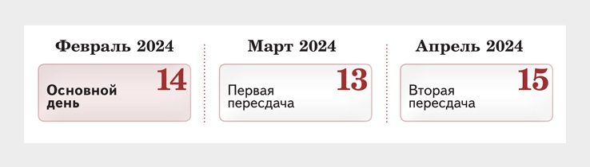

ГИА
Государственная итоговая аттестация (ГИА) по образовательным программам основного общего образования (ГИА) проводится в целях определения соответствия результатов освоения обучающимися образовательных программ основного общего образования соответствующим требованиям федерального государственного образовательного стандарта основного общего образования.
Официальный сайт Федеральной службы по надзору в сфере образования и науки (Рособрнадзор)
Официальный сайт ФГБНУ «Федеральный институт педагогических измерений» Навигатор ГИА
Региональная «Горячая линия ЕГЭ, ОГЭ «: +7 (4242) 46-59-60, 46-59-29
Телефон доверия ЕГЭ: +7 (495) 104-68-38
«Горячая линия» Рособрнадзора: +7 (495) 984-89-19
ГИА проводится:
в форме основного государственного экзамена (ОГЭ)
с использованием контрольных измерительных материалов, представляющих собой комплексы заданий стандартизированной формы (КИМ), — для обучающихся образовательных организаций, в том числе иностранных граждан, лиц без гражданства, в том числе соотечественников за рубежом, беженцев и вынужденных переселенцев, освоивших образовательные программы основного общего образования в очной, очно-заочной или заочной формах, лиц, обучающихся в образовательных организациях, расположенных за пределами территории Российской Федерации и реализующих имеющие государственную аккредитацию образовательные программы основного общего образования, и загранучреждениях Министерства иностранных дел Российской Федерации, имеющих в своей структуре специализированные структурные образовательные подразделения, а также для экстернов, допущенных в текущем году к ГИА;
в форме государственного выпускного экзамена (ГВЭ)
с использованием текстов, тем, заданий, билетов — для обучающихся, осваивающих образовательные программы основного общего образования в специальных учебно-воспитательных учреждениях закрытого типа, а также в учреждениях, исполняющих наказание в виде лишения свободы, а также для обучающихся с ограниченными возможностями здоровья, обучающихся — детей-инвалидов и инвалидов, осваивающих образовательные программы основного общего образования;
в форме государственного выпускного экзамена (ГВЭ)
с использованием текстов, тем, заданий, билетов — для обучающихся, осваивающих образовательные программы основного общего образования в специальных учебно-воспитательных учреждениях закрытого типа, а также в учреждениях, исполняющих наказание в виде лишения свободы, а также для обучающихся с ограниченными возможностями здоровья, обучающихся — детей-инвалидов и инвалидов, осваивающих образовательные программы основного общего образования;
в форме, устанавливаемой органами исполнительной власти субъектов Российской Федерации, осуществляющими государственное управление в сфере образования (ОИВ)
, — для обучающихся образовательных организаций, изучавших родной язык из числа языков народов Российской Федерации (родной язык) и литературу народов России на родном языке из числа языков народов Российской Федерации (родная литература) и выбравших экзамен по родному языку и (или) родной литературе для прохождения ГИА на добровольной основе.
Заместитель директора, курирующий государственную итоговую аттестацию выпускников 9 классов в школе — Федосова Наталья Васильевна (телефон 23-63-67 доб. 103).
Выбранные обучающимся учебные предметы указываются в заявлении, которое он подает в образовательную организацию до 1 марта текущего года. Обучающиеся вправе изменить (дополнить) перечень указанных в заявлении экзаменов только при наличии у них уважительных причин (болезни или иных обстоятельств, подтвержденных документально). В этом случае обучающийся подает заявление в государственную экзаменационную комиссию (ГЭК) с указанием измененного перечня учебных предметов, по которым он планирует пройти ГИА, и причины изменения заявленного ранее перечня. Указанное заявление подается не позднее чем за две недели до начала соответствующих экзаменов.
Результаты, полученные на ГИА-9 по двум учебным предметам по выбору, будут влиять на итоговую отметку, выставляемую в аттестат об основном общем образовании (аттестат), а также на получение аттестата. При прохождении ГИА-9 наличие неудовлетворительного результата более чем по двум учебным предметам не позволяет выпускнику повторно участвовать в экзаменах по данным учебным предметам в дополнительные сроки. Повторно к сдаче ГИА-9 по соответствующим учебным предметам в текущем году по решению ГЭК допускаются обучающиеся, получившие на ГИА-9 неудовлетворительные результаты не более чем по двум учебным предметам.
Итоговое собеседование по русскому языку
Итоговое собеседование по русскому языку является одним из условий допуска к ГИА-9. Итоговое собеседование по русскому языку проводится по текстам, темам и заданиям, сформированным по часовым поясам Рособрнадзором.
Для участия в итоговом собеседовании обучающиеся подают заявление и согласие на обработку персональных данных в образовательные организации, в которых обучающиеся осваивают образовательные программы основного общего образования, а экстерны – в организации, осуществляющие образовательную деятельность по имеющим государственную аккредитацию образовательным программам основного общего образования, по выбору экстернов не позднее чем за две недели до начала проведения итогового собеседования.
Участники итогового собеседования с ОВЗ при подаче заявления на прохождение итогового собеседования предъявляют копию рекомендаций психолого-медико-педагогической комиссии, участники итогового собеседования – дети-инвалиды и инвалиды – оригинал или заверенную в установленном порядке копию справки, подтверждающей факт установления инвалидности, выданной федеральным государственным учреждением медико-социальной экспертизы, а также копию рекомендаций ПМПК (при необходимости создания специальных условий, учитывающих состояние здоровья, особенности психофизического развития).
Итоговое собеседование проводится во вторую среду февраля в образовательных организациях, реализующих образовательные программы основного общего образования по месту обучения участников по текстам, темам и заданиям, сформированным по часовым поясам Рособрнадзором.
Расписание проведения итогового собеседования по русскому языку в 2023-2024 учебном году:
Основное срок: 14 февраля 2024 года.
Дополнительные сроки:13 марта, 15 aпреля 2024 года.

В дополнительные сроки в текущем учебном году (во вторую рабочую среду марта и первый рабочий понедельник мая) повторно допускаются к итоговому собеседованию по русскому языку участники, получившие «незачет», не явившиеся по уважительным причинам, а также участники, которые не смогли завершить итоговое собеседование по русскому языку по уважительным причинам (болезнь или иные обстоятельства), подтвержденным документально.
Итоговое собеседование по русскому языку проводится в образовательных организациях и (или) в местах, определенных органами исполнительной власти субъектов Российской Федерации, осуществляющими государственное управление в сфере образования.
Комплекты текстов, тем и заданий доставляются Рособрнадзором в день проведения итогового собеседования по русскому языку.
График информирования участников ГИА-9 о результатах экзаменов и сроках подачи апелляций о несогласии с выставленными баллами (открыть)
Задания итогового собеседования по русскому языку:
чтение текста вслух;
подробный пересказ текста с включением приведенного высказывания;
монологическое высказывание;
диалог.
Итоговое собеседование начинается в 09.00. Продолжительность проведения итогового собеседования для каждого участника составляет в среднем 15 минут. Для обучающихся с ОВЗ, обучающихся — детей-инвалидов и инвалидов продолжительность итогового собеседования по русскому языку увеличивается на 30 минут.
Проверка ответов завершается не позднее чем через пять календарных дней с даты его проведения. Результатом итогового собеседования по русскому языку является «зачет» или «незачет». Действие результата итогового собеседования как допуска к ГИА –бессрочно.
Демонстрационный вариант контрольных измерительных материалов итогового собеседования по русскому языку в 2023 году (открыть)
Заявление на итоговое собеседование (открыть)
Согласие на обработку персональных данных (открыть)
Документы
Приказ Министерства просвещения Российской Федерации, Федеральной службы по надзору в сфере образования и науки от 04.04.2023 № 232/551 «Об утверждении Порядка проведения государственной итоговой аттестации по образовательным программам основного общего образования» (открыть)
Приказ Министерства просвещения Российской Федерации, Федеральной службы по надзору в сфере образования и науки от 18.12.2023 № 955/2118 «Об утверждении единого расписания и продолжительности проведения государственного выпускного экзамена по образовательным программам основного общего и среднего общего образования по каждому учебному предмету, требований к использованию средств обучения и воспитания при его проведении в 2024 году» (открыть)
Приказ министерства образования Сахалинской области от 09.03.2023 № 1-3.12-92/23 «О внесении изменений в приказ министерства образования Сахалинской области от 05.05.2022 № 3.12-14 «Об утверждении минимального количества первичных баллов основного государственного экзамена и государственного выпускного экзамена, подтверждающего освоение обучающимися образовательных программ основного общего образования в соответствии с требованиями федерального государственного образовательного стандарта основного общего образования, на территории Сахалинской области» (открыть)
Приказ Министерства просвещения Российской Федерации, Федеральной службы по надзору в сфере образования и науки от 31.01.2024 № 59/137 «Об особенностях проведения государственной итоговой аттестации при завершении освоения образовательных программ основного общего и среднего общего образования в 2024 году» (открыть)
Расписание
Расписание проведения ОГЭ и ГВЭ-9 в 2024 году (скачать)
Демонстрационные материалы
Демоверсии, спецификации, кодификаторы КИМ ОГЭ 2024 (открыть)
Изменения в КИМ ОГЭ 2024 года (открыть)
Навигатор самостоятельной подготовки к ОГЭ (открыть)
Государственная итоговая аттестация по образовательным программам среднего общего образования (ГИА-11), завершающая освоение имеющих государственную аккредитацию основных образовательных программ среднего общего образования, является обязательной. Экзамены по всем учебным предметам (за исключением иностранных языков) проводятся на русском языке.
Официальный сайт Федеральной службы по надзору в сфере образования и науки (Рособрнадзор)
Официальный сайт ФГБНУ «Федеральный институт педагогических измерений»
Суперсервис «Поступление в вуз онлайн» (https://www.gosuslugi.ru/vuzonline)
Региональная «Горячая линия ЕГЭ, ОГЭ «: +7 (4242) 46-59-60, 46-59-29
Телефон доверия ЕГЭ: +7 (495) 104-68-38
«Горячая линия» Рособрнадзора: +7 (495) 984-89-19
Заместитель директора, курирующий государственную итоговую аттестацию выпускников 11 классов в школе-Ржанникова Ольга Николаевна (телефон 23-63-67 доб. 102).
Итоговое сочинение (изложение)
Итоговое сочинение (изложение) как условие допуска к государственной итоговой аттестации по образовательным программам среднего общего образования проводится для обучающихся 11 классов, экстернов. Обучающиеся с ограниченными возможностями здоровья вправе выбрать написание изложения. В рамках названных пяти направлений Рособрнадзор разработает и предложит конкретные темы, которые станут известны за 15 минут до начала творческого испытания.
Итоговое сочинение (изложение) начнётся в 10:00 по местному времени. Продолжительность написания итогового сочинения (изложения) составляет 3 часа 55 минут (235 минут). Для участников итогового сочинения (изложения) с ограниченными возможностями здоровья, детей-инвалидов и инвалидов продолжительность написания итогового сочинения (изложения) увеличивается на 1,5 часа. Рекомендуемый объем итогового сочинения – не менее 350 слов, итогового изложения — 250-300 слов.
Сочинения будут оцениваться в формате «зачет»-«незачет» по пяти критериям: соответствие теме, аргументация и привлечение литературного материала, композиция, качество речи, грамотность. Во время проведения итогового сочинения (изложения) участникам запрещено иметь при себе средства связи, фото-, аудио- и видеоаппаратуру, справочные материалы, письменные заметки и иные средства хранения и передачи информации, собственные орфографические и толковые словари. Также участники не имеют права пользоваться текстами литературных источников. Нарушившие данные правила участники удаляются с итогового сочинения.
Учащиеся, получившие неудовлетворительный результат «незачет», не явившиеся на итоговое сочинение (изложение) или не завершившие его написание по уважительным причинам, смогут написать сочинение в дополнительные сроки. С результатами итогового сочинения (изложения) выпускники текущего года, экстерны могут ознакомиться в образовательных организациях, в которых осваивают образовательные программы среднего общего образования.
Расписание проведения итогового сочинения (изложения) в 2023-2024 учебном году
Основное срок: 06 декабря 2023 года
Дополнительные сроки: 07 февраля 2024 года и 10 апреля 2024 года.
Срок действия сочинения:
как условие допуска к ГИА — бессрочно
для предоставления в ВУЗ — 4 года.
Если несколько раз выпускник писал сочинение — действительно последнее.
В дополнительные сроки допускаются к написанию:
получившие неудовлетворительный результат («незачет»);
удаленные с итогового сочинения (изложения) за нарушение требований Порядка проведения ГИА;
не явившиеся на итоговое сочинение (изложение) по уважительным причинам (болезнь или иные обстоятельства), подтвержденным документально;
не завершившие написание итогового сочинения (изложения) по уважительным причинам (болезнь или иные обстоятельства), подтвержденным документально.
Приказ министерства образования Сахалинской области от 19 декабря 2023 г. N 1-3.12-870/23 «Об утверждении порядка организации и проведения итогового сочинения (изложения) на территории Сахалинской области и признании утратившими силу некоторых нормативных правовых актов министерства образования Сахалинской области» (открыть)
Заявление выпускника текущего года (открыть)
Согласие на обработку персональных данных (открыть)
Памятка о порядке проведения итогового сочинения (изложения) для ознакомления обучающихся и их родителей (законных представителей) в 2023-2024 учебном году (открыть)
Плакат «Итоговое сочинение (изложение)» (открыть)
Документы
Приказ Министерства просвещения Российской Федерации, Федеральной службы по надзору в сфере образования и науки от 04.04.2023 № 233/552 «Об утверждении Порядка проведения государственной итоговой аттестации по образовательным программам среднего общего образования» (открыть)
ПРИКАЗ Минпросвещения России N 243, Рособрнадзора N 802 от 12.04.2024 «О ВНЕСЕНИИ ИЗМЕНЕНИЙ В ПОРЯДОК ПРОВЕДЕНИЯ ГОСУДАРСТВЕННОЙ ИТОГОВОЙ АТТЕСТАЦИИ ПО ОБРАЗОВАТЕЛЬНЫМ ПРОГРАММАМ СРЕДНЕГО ОБЩЕГО ОБРАЗОВАНИЯ, УТВЕРЖДЕННЫЙ ПРИКАЗОМ МИНИСТЕРСТВА ПРОСВЕЩЕНИЯ РОССИЙСКОЙ ФЕДЕРАЦИИ И ФЕДЕРАЛЬНОЙ СЛУЖБЫ ПО НАДЗОРУ В СФЕРЕ ОБРАЗОВАНИЯ И НАУКИ ОТ 4 АПРЕЛЯ 2023 Г. N 233/552» (открыть)
Приказ Министерства просвещения Российской Федерации, Федеральной службы по надзору в сфере образования и науки от 18.12.2023 № 953/2116 «Об утверждении единого расписания и продолжительности проведения единого государственного экзамена по каждому учебному предмету, требований к использованию средств обучения и воспитания при его проведении в 2024 году» (открыть)
Приказ Министерства просвещения Российской Федерации, Федеральной службы по надзору в сфере образования и науки от 18.12.2023 № 955/2118 «Об утверждении единого расписания и продолжительности проведения государственного выпускного экзамена по образовательным программам основного общего и среднего общего образования по каждому учебному предмету, требований к использованию средств обучения и воспитания при его проведении в 2024 году» (открыть)
Приказ Министерства просвещения Российской Федерации, Федеральной службы по надзору в сфере образования и науки от 12.04.2024 № 244/803 «О внесении изменений в приказы Министерства просвещения Российской Федерации и Федеральной службы по надзору в сфере образования и науки от 18 декабря 2023 г. № 953/2116, № 954/2117 и № 955/2118» (открыть)
Приказ Министерства просвещения Российской Федерации, Федеральной службы по надзору в сфере образования и науки от 31.01.2024 № 59/137 «Об особенностях проведения государственной итоговой аттестации при завершении освоения образовательных программ основного общего и среднего общего образования в 2024 году» (открыть)
Приказ Минпросвещения России от 29 сентября 2023 г. «Об утверждении Порядка и условий выдачи медалей «За особые успехи в учении» I и II степеней» (открыть)
Расписание
Расписание проведения ЕГЭ и ГВЭ-11 в 2024 году (скачать)
Демонстрационные материалы
Демоверсии, спецификации, кодификаторы КИМ ЕГЭ 2024 (открыть)
Изменения в КИМ ЕГЭ 2024 года ()открыть
Навигатор самостоятельной подготовки к ЕГЭ (открыть)
Информационные материалы
Плакаты ЕГЭ (открыть)
Суперсервис «Поступление в вуз онлайн» (перейти)
ПРИГЛАШАЕМ СТАТЬ ОБЩЕСТВЕННЫМ НАБЛЮДАТЕЛЕМ НА ЕГЭЕсли вы совершеннолетний дееспособный гражданин Российской Федерации и не имеете отношения к организациям, осуществляющим образовательную деятельность (не работаете, не учреждаете, не контролируете), то вы вполне сможете стать общественным наблюдателем на ЕГЭ. Очевидно, что никто из ближайших родственников потенциального наблюдателя в этом году на его «рабочем месте», то есть в том же пункте проведения, ЕГЭ сдавать не должен.
Кстати, «наблюдать» можно не только за ЕГЭ. Можно осуществлять общественный контроль за государственной (итоговой) аттестацией, проводимой в любых формах, установленных законодательством Российской Федерации в области образования.
Для этого нужно, во-первых, иметь желание, во-вторых, соответствовать критериям (см. выше) и, в-третьих, получить аккредитацию в порядке, установленном законодательством. В настоящий момент деятельность общественных наблюдателей осуществляется на основании приказа Минобрнауки РФ от 29 августа 2011 г. № 2235 «Об утверждении Положения о системе общественного наблюдения при проведении государственной (итоговой) аттестации обучающихся, освоивших образовательные программы основного общего образования или среднего (полного) общего образования».
Важно понимать, что ключевым словом в паре «общественный наблюдатель» является второе. То есть, нельзя нарушать ход проведения государственной (итоговой) аттестации или рассмотрения апелляций, можно лишь присутствовать в месте проведения экзамена и информировать уполномоченных лиц о совершенных нарушениях установленного порядка проведения ГИА.
Чтобы стать общественным наблюдателем, необходимо личное заявление в произвольной форме (либо уполномоченным гражданином лицом на основании документа, удостоверяющего личность, и оформленной в установленном порядке доверенности). Решение аккредитующего органа вы узнаете максимум через 5 рабочих дней с момента получения им вашего заявления.
Главное, не затягивать решение этого вопроса: аккредитация граждан в качестве общественных наблюдателей на экзамен завершается не позднее, чем за две недели до установленной даты проведения экзамена по соответствующему общеобразовательному предмету. Обращаться с подобной инициативой нужно в местные органы управления образованием.
Согласитесь, что статус общественного наблюдателя и его активная позиция на экзаменах (разумеется, в рамках его прав и обязанностей) – это конструктивная альтернатива очередному обсуждению на каком-нибудь интернет-ресурсе, насколько необъективны в наше время экзамены и скольким школьникам в этом году удалось списать. Правильнее начать совершенствовать ЕГЭ с себя!
информация о форме обучения и способе подачи заявления на обучение
согласие на обработку персональных данных